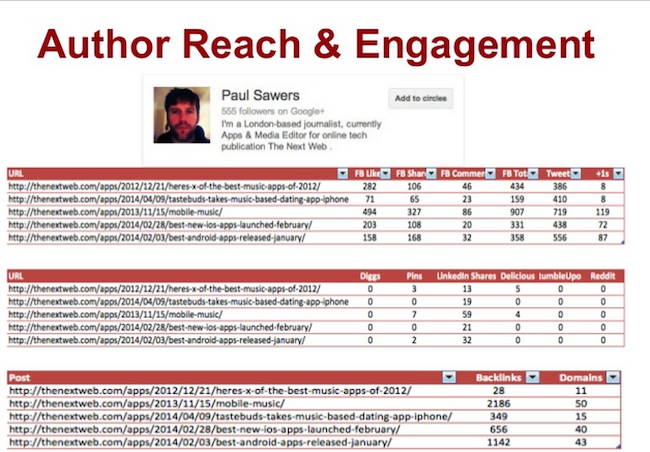
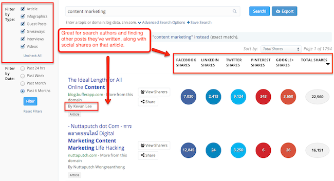
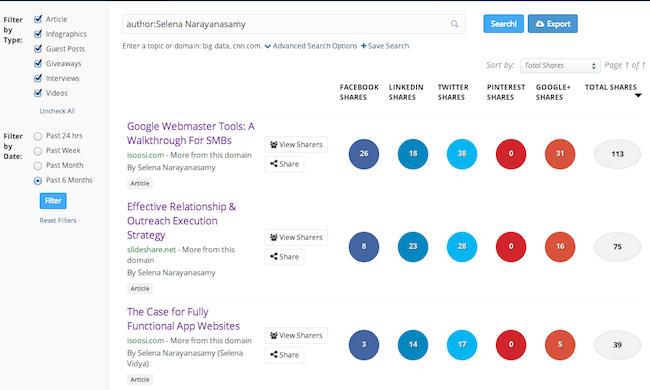
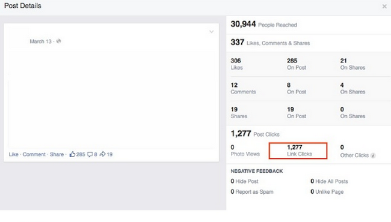

The 6-Step Process to Building Better Relationships With a Data-Driven Approach to Outreach
Outreach is the art of connecting with bloggers or authors and building relationships through social media, email, or other online channels.
It’s a subject near and dear to my heart.
Earlier this year, I spoke about this topic at Authority Intensive, sharing the insights I learned while down in the trenches — building outreach teams from scratch, and seeing them lose opportunities to gain substantial visibility because of a lack of data-driven research and improper targeting.
Truly effective outreach is based upon deep research, relationship-building skills, and a fundamental understanding of SEO.
To form the relationships you want, you need to customize each outreach campaign.
Unfortunately, outreach campaigns often fail when content marketers only perform surface-level research.
Here are six essential tips for conducting thorough outreach research that creates a foundation for ongoing, strong relationships.
1. Review outreach fundamentals
Data-driven research helps you identify relationships that are mutually beneficial.
There are several consistent, fundamental components of outreach execution:
- Time
- Data
- Conversations
- Relationship Maintenance
- Value-Add
But one element is especially easy to neglect: Using data to hyper-target potential relationships.
When you perform outreach correctly, you form a mutually beneficial relationship.
2. Assess your value-add
The first question you should ask yourself when working on outreach is: “What’s your value-add?”
Notice the phrase “your value-add” rather than “their value-add.” This slight mental shift is an extremely important part of outreach.
You need to offer valuable information, including, but not limited to:
- Original data and studies. Provide proprietary industry or consumer data, or studies in the form of stand-alone content.
- Unique expertise. How can you help through Q&A sessions, live blogging, interviews, etc?
- Exclusive resources. To appeal to a publisher or blogger, offer an information page that complements their research or interests.
- Supplementary help. To initiate a relationship, present the assets you can contribute other than content.
3. Identify potential relationships
I heard somewhere that everybody on this planet is separated by only six other people. I find it extremely comforting that we’re so closely connected.
But building meaningful connections is not easy. You have to find the right six people to make the right connections.
Some teams fail because they search Google to find relevant publishers or bloggers — that’s basically busy work.
The best place to start is with the actual data from your website or your client’s website. Review:
- Backlinks and mentions.
- Backlinks help you find authors or publishers who have covered you in the past. Mentions reveal discussions about your brand.
- Competitors’ backlinks.
- Take advantage of tools like Majestic SEO to dig through their backlinks and mentions. Since you have similar audiences, use these sources to create a list of publishers or bloggers to contact.
Once you have a list of author and publisher websites, you should also mine:
- Backlinks of the publishers’ websites. This will help you identify who shares their content.
- Backlinks of those backlinks. This will help you identify their extended audience.
- Authority metrics on the publications. Determine domain authority, citation trust, and citation flow scores of both small and large websites to help you decide who to work with.
The goal at this point is to make a large list that you can whittle down with the tools listed at the end of this post.
4. Learn about authors
Notice I wrote “authors” — not publishers, not the editorial staff. Authors.
Since you’re going to build relationships with authors, take time to understand them. Find out:
- Who are they?
- Where are they from?
- Where did they go to school?
- Where do they write?
- What topics do they love to cover?
- What are their interests outside of their industries?
- Are they active on one particular network over another?
- What are their temperaments?
- What topics or brands do they love or hate?
- How well does their content perform socially and organically?
In the screenshot below, I’ve pulled an example that shows basic data about an author who writes for The Next Web. You see URLs of posts he wrote for the specific publication, social metrics, and organic metrics, such as number of referring domains and backlinks.

The data gives an overall view of whether or not the content performed well, or if specific topics resonated with the audience. Next, I usually check out comment engagement.
There are multiple tools that you can use to aggregate this information. BuzzSumo has quickly become my favorite tool because it allows you to view metrics and segment your search by types of content, specific authors, or URLs.

BuzzSumo also allows you to view metrics about other posts from that author, and SharedCount is a tool that quickly pulls social metrics.
I use Majestic SEO to pull backlinks and referring domains.

5. Make your cold market warm
Relationships always start out cold, but that doesn’t mean they can’t quickly become lukewarm with a little bit of effort.
You can find ways to genuinely connect with different authors, even if you don’t have any type of potential collaboration in mind.
Focus on building relationships that are both personal and professional:
- Connect through social networks and blog post comments.
- Share their content that you find interesting.
- Talk about non-business topics.
- Meet in real life at a conference or event — just make plans ahead of time so you are not relying on happenstance.
6. Drive success
Once you collaborate on a project with a particular author or publisher, your job isn’t done. Contribute to the success of the content.
Different techniques and strategies depend on individual situations, but here are a few examples.
Share across relevant networks
Find specific communities interested in the content produced from your collaboration. Do you know other authors who may want to share the content?
An author may find it useful to reference your research in an upcoming blog post or in a round-up post she shares with her audience or email list.
Paid social
You can boost a post on Facebook after you share the link. It’s inexpensive, and it helps get more eyeballs on the post, which can also result in more shares or organic links.
Below is a screenshot of an example from one of my own previous local campaigns.

Discuss future collaborations
Suggest other ways you may be able to contribute content. When you provide unique value as an expert on a topic, you help the author with his or her editorial calendar.
What not to do
Relationships are delicate, so I’m going to arm you with several crucial tips to make sure you keep your relationships strong:
Don’t ask for multiple links
Some authors work for publications that have strict guidelines regarding links in content or author bios. Be respectful of that. Links should provide extra value and, of course, be relevant to the content.
Don’t cut off communication
Avoid a “said it and forget it” relationship. Remember what I said about building a personal and professional relationship. Treat it as such, and don’t neglect or end a relationship after a promise has been delivered.
Don’t offer multiple publishers the same article
This should be self-explanatory, especially if you promised exclusive content. Be careful not to break trust.
Don’t assume you know their audience
If there’s anything authors or publications hate, it’s having an outside party claim that their own content is perfect for a publication’s audience. If appropriate, reference other posts on their website that are similar to your proposed topic, but make sure you let them decide whether or not it’s the right fit.